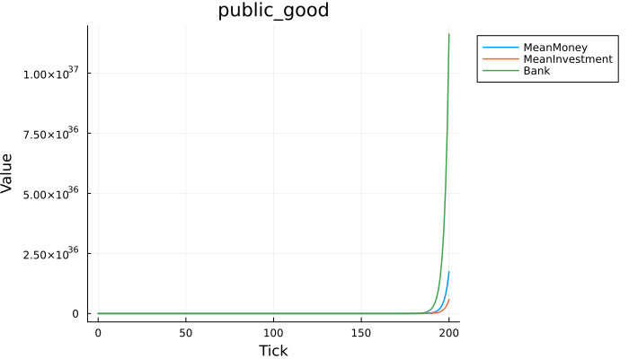
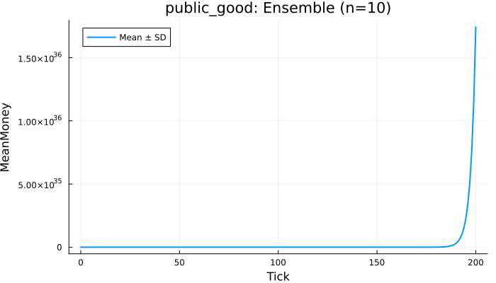
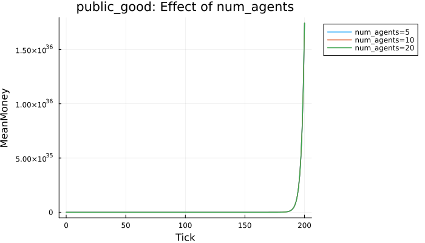

Public Good
Overview
WHAT IS IT?
Public Good is a game that asks each of the players to contribute to a common pool that will then be multiplied by the game leader and redistributed to all players.
The standard economic prediction based on ‘rational’ behavior is that all individuals will contribute nothing. However, in practice, players show a wide diversity of strategies. This game also allows players to pay to remove money from players who are ‘doing too well.’
The game can be used to demonstrate basic multiplication, cooperative behavior, and the evolution of altruism as players negotiate fair play.
HOW IT WORKS
At the beginning of the game, all players are given the same amount of money. Each turn begins with players anonymously deciding how much money to contribute to a common pool held by the game leader. Then the game leader collects the money and multiplies it by a number greater than one, and then redistributes this money to all the players. At any point during the game a player may press the “punish the rich” button which takes away one dollar from the presser and one dollar from the richest player. The game continues like this until the game leader decides it is an appropriate time to stop.
THINGS TO NOTICE
Discussion on the following topics may be appropriate for different levels of players:
- How does the fraction slider affect how much money is given to the bank?
- How does the participation of other players affect the outcome for each individual?
- Can predictions be made about how much money will be returned for specific investments? Are the predictions correct? Why or why not?
- How do different individuals play? What is the best way to play? Would this change if individuals were put into small teams who competed against one another?
- What role does punishment play in this game? How can it be used effectively?
- How is this game like or not like real life situations where cooperation is necessary?
- How might situations like this in real life lead to altruistic behavior on the part of the participants?
THINGS TO TRY
Try playing the game once with labels “Off” then once with labels “On.” Does this change the game play?
Try changing the multiplier that the bank uses to increase the money before it is redistributed.
CREDITS AND REFERENCES
Here are some references to increase your understanding and appreciation of this game and others like it
Henrich, J. and R. Boyd and S.Bowles and C. Camerer and E.Fehr and H. Gintis and R. McElreath (2001) Cooperation, Reciprocity and Punishment in Fifteen Small-scale Societies,” Working Papers 01-01-007, Santa Fe Institute.
Sanfey, A. et al. (2003) The Neural basis of economic decision-making in the ultimatum game. Science 300: 1755-1758.
HOW TO CITE
If you mention this model in a publication, we ask that you include these citations for the model itself and for the NetLogo software:
- Wilensky, U. (2003). NetLogo HubNet Public Good model. http://ccl.northwestern.edu/netlogo/models/HubNetPublicGood. Center for Connected Learning and Computer-Based Modeling, Northwestern Institute on Complex Systems, Northwestern University, Evanston, IL.
- Wilensky, U. (1999). NetLogo. http://ccl.northwestern.edu/netlogo/. Center for Connected Learning and Computer-Based Modeling, Northwestern Institute on Complex Systems, Northwestern University, Evanston, IL.
COPYRIGHT AND LICENSE
Copyright 2003 Uri Wilensky.

This work is licensed under the Creative Commons Attribution-NonCommercial-ShareAlike 3.0 License. To view a copy of this license, visit http://creativecommons.org/licenses/by-nc-sa/3.0/ or send a letter to Creative Commons, 559 Nathan Abbott Way, Stanford, California 94305, USA.
Commercial licenses are also available. To inquire about commercial licenses, please contact Uri Wilensky at uri@northwestern.edu.
This activity and associated models and materials were created as part of the projects: PARTICIPATORY SIMULATIONS: NETWORK-BASED DESIGN FOR SYSTEMS LEARNING IN CLASSROOMS and/or INTEGRATED SIMULATION AND MODELING ENVIRONMENT. The project gratefully acknowledges the support of the National Science Foundation (REPP & ROLE programs) – grant numbers REC #9814682 and REC-0126227.
Parameters
| Parameter | Type | Default | Description |
|---|---|---|---|
num_agents | Int | 10 | num agents |
initial_money | Float64 | 10.0 | initial money |
multiplier | Float64 | 2.0 | bank is multiplied by this before redistribution |
fraction_put_in | Float64 | 0.5 | fraction of money each agent invests |
punishment_cost | Float64 | 1.0 | cost to punisher and punished |
punish | Bool | false | whether punishment mechanism is active |
max_ticks | Int | 200 | max ticks |
Source Code
The Julia code to run this model:
using ArkModelZoo
_, trajectory = run_public_good()Time Series

Ensemble Runs
Ten replicates with different random seeds, showing mean ± standard deviation.

Parameter Sensitivity
Varying num_agents.

Appendix: Source Code
This model is implemented in the Ark.jl Entity-Component-System (ECS) framework. The code is split into five files, each with a distinct role:
- Parameters: a mutable struct holding all configurable values.
- Components: lightweight data types attached to individual entities (agents).
- Resources: world-level shared state accessible to all systems.
- Systems: functions that operate on entities each tick, defining model behavior.
- Model: wiring that assembles the world, registers resources and systems, and provides the run entry point.
Parameters (parameters.jl)
The parameter struct uses @kwdef so that every field has a default value and can be overridden by keyword. These defaults match the original NetLogo model’s slider settings.
Base.@kwdef mutable struct PGParams
num_agents::Int = 10
initial_money::Float64 = 10.0
multiplier::Float64 = 2.0 # bank is multiplied by this before redistribution
fraction_put_in::Float64 = 0.5 # fraction of money each agent invests
punishment_cost::Float64 = 1.0 # cost to punisher and punished
punish::Bool = false # whether punishment mechanism is active
max_ticks::Int = 200
seed::Int = 42
endComponents (components.jl)
Components are lightweight data types attached to individual entities (agents). Mutable structs hold per-entity state, while empty tag structs act as markers for the ECS query system to efficiently filter entities.
mutable struct PGStudent
id::Int
money::Float64
investment::Float64
fraction_put_in::Float64
end
PGStudent() = PGStudent(0, 0.0, 0.0, 0.5)Resources (resources.jl)
Resources are world-level singletons shared across all systems, used for global state and aggregate statistics.
mutable struct PGStats
mean_money::Float64
mean_investment::Float64
bank::Float64
turn::Int
end
PGStats() = PGStats(0.0, 0.0, 0.0, 0)Systems (systems.jl)
Systems contain the model logic and execute in a defined order each tick. Each system struct implements either initialize! (run once at setup) or update! (run every tick).
# NetLogo-compatible rounding (round half up, not banker's rounding)
# Use Float64 to avoid Int64 overflow with exponentially growing values
_nl_round(x) = floor(x + 0.5)
# --- Initialization ---
struct InitPGSystem <: System end
function initialize!(::InitPGSystem, world::World)
params = get_resource(world, PGParams)
for i in 1:params.num_agents
ag = PGStudent()
ag.id = i
ag.money = params.initial_money
ag.fraction_put_in = params.fraction_put_in
ag.investment = 0.0
new_entity!(world, (ag,))
end
_pg_update_stats!(world)
return nothing
end
# --- Go: take money, multiply, distribute ---
# Each round: agents invest fraction of their money, pool is multiplied,
# then divided equally among all agents.
struct PGGoSystem <: System end
function update!(::PGGoSystem, world::World)
params = get_resource(world, PGParams)
rng = get_resource(world, RNGResource).rng
stats = get_resource(world, PGStats)
# Collect agents
agents = PGStudent[]
eids = Entity[]
for (e_arr, ag_arr) in Query(world, (PGStudent,))
for i in eachindex(e_arr)
push!(eids, e_arr[i])
push!(agents, ag_arr[i])
end
end
Random.shuffle!(rng, agents)
n = length(agents)
n == 0 && return nothing
# Take money: each agent invests
bank = 0.0
for ag in agents
ag.investment = Float64(_nl_round(ag.fraction_put_in * ag.money))
bank += ag.investment
ag.money -= ag.investment
end
# Multiply the bank
bank *= params.multiplier
# Distribute equally
share = bank / n
for ag in agents
ag.money += share
end
# Optional punishment: all agents pay, then richest pays again
if params.punish
for ag in agents
ag.money -= params.punishment_cost
end
richest = agents[1]
for ag in agents
if ag.money > richest.money
richest = ag
end
end
richest.money -= params.punishment_cost
end
stats.turn += 1
stats.bank = bank
_pg_update_stats!(world)
return nothing
end
function _pg_update_stats!(world::World)
stats = get_resource(world, PGStats)
money_total = 0.0
invest_total = 0.0
n = 0
for (_, ag_arr) in Query(world, (PGStudent,))
for ag in ag_arr
money_total += ag.money
invest_total += ag.investment
n += 1
end
end
if n > 0
stats.mean_money = money_total / n
stats.mean_investment = invest_total / n
end
end
# --- Termination ---
struct PGTerminationSystem <: System end
function update!(::PGTerminationSystem, world::World)
params = get_resource(world, PGParams)
tick = get_resource(world, Tick)
if tick.tick + 1 >= params.max_ticks
get_resource(world, Terminate).stop = true
end
return nothing
endModel (model.jl)
The model file assembles all pieces: it creates the ECS World with the required component types, registers resources, builds the Scheduler with systems in execution order, and exposes the public run entry point. The observer pattern records the trajectory each tick.
function pg_world(; initial_capacity::Int = 64)
return World(PGStudent; initial_capacity = initial_capacity, allow_mutable = true)
end
function pg_systems()
return (
InitPGSystem(),
PGGoSystem(),
PGTerminationSystem(),
)
end
function pg_model(params::PGParams = PGParams())
world = pg_world()
_add_standard_resources!(world, params)
add_resource!(world, PGStats())
scheduler = Scheduler(world, pg_systems())
initialize!(scheduler)
return scheduler
end
struct PGObserver end
function pg_headers(::PGObserver)
return ["MeanMoney", "MeanInvestment", "Bank"]
end
function pg_values(::PGObserver, world::World)
stats = get_resource(world, PGStats)
return Float64[stats.mean_money, stats.mean_investment, stats.bank]
end
function run_public_good(; params::PGParams = PGParams(), observe::Bool = true)
return _run_model(pg_model, PGObserver(), pg_values; params, observe)
end